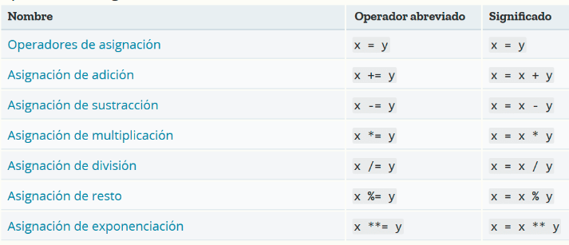
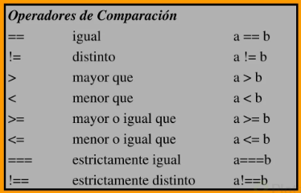
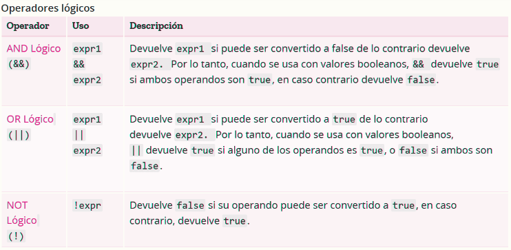

El operador de asignación (+=) agrega un valor a una variable.
El operador + también se puede usar para agregar (concatenar) cadenas.

Se asigna el valor de 5 a x; y muestra el valor de comparación (x == 8):
Se asigna el valor de 5 a x, y muestra el valor de la comparación (x >= 8).

El operador && regresa un valor verdadero si ambas expresiones son verdaderas, de lo contario regresa Falso.
si p = 6
si q = 3
El operador || devuelve verdadero si una o ambas expresiones son verdaderas, de lo contrario regresa Falso.
let x = 6
let y = 3